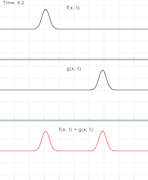

This illustration simulates what happens when we add together two wave functions. In each animation there are two waves traveling in opposite directions. In animation one they have the same amplitude, and in animation two they have opposite amplitudes.